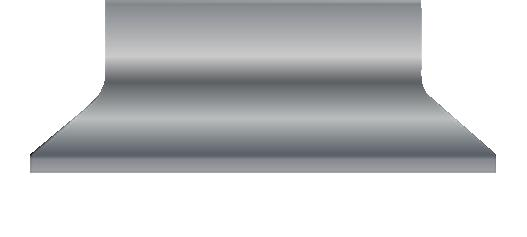
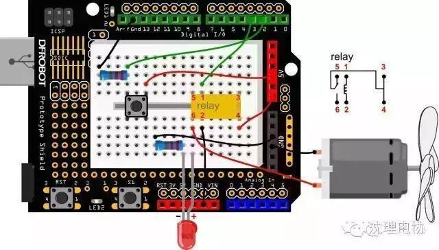
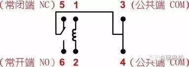

Arduino教程 之--自制风扇

夏天到了让我们做一个小风扇吧。
同时会接触两件新元件——继电器、直流电机。
继电器，我们可以理解为是用较
小的电流去控制较大电流的
一种“自动开关”。在这里，
继电器是用来控制电机转动的。

1× 5mm LED灯
2× 220欧电阻
1× 按钮
1× 继电器 HRS1H-S -DC5V
1× 小电机
1 × 风扇叶片
STEP 1： 硬件连接 
按下图进行连线，按钮连接到数字2。按钮一端连接5V，另一端连接GND，并用一个220Ω的电阻作为下拉电阻，以防引脚悬空干扰。继电器有6个引脚，分别标有序号。1，2引脚为继电器的输入信号，分别接Arduino的数字引脚和GND。3,4,5,6为继电器输出的控制引脚，这里只使用4，6两个引脚。我们把继电器想成一个开关，开关也只要用到两个引脚。
STEP 2： 输入代码
int buttonPin = 2; // button连接到数字2
int relayPin = 3; // 继电器连接到数字3
int relayState = HIGH; // 继电器初始状态为HIGH
int buttonState; // 记录button当前状态值
int lastButtonState = LOW; // 记录button前一个状态值
long lastDebounceTime = 0;
long debounceDelay = 50; //去除抖动时间
void setup() {
pinMode(buttonPin, INPUT);
pinMode(relayPin, OUTPUT);
digitalWrite(relayPin, relayState); // 设置继电器的初始状态
}
void loop() {
int reading = digitalRead(buttonPin); //reading用来存储buttonPin的数据
// 一旦检测到数据发生变化，记录当前时间
if (reading != lastButtonState) {
lastDebounceTime = millis();
}
// 等待50ms，再进行一次判断，是否和当前button状态相同
// 如果和当前状态不相同，改变button状态
// 同时，如果button状态为高（也就是被按下），那么就改变继电器的状态
if ((millis() - lastDebounceTime) > debounceDelay) {
if (reading != buttonState) {
buttonState = reading;
if (buttonState == HIGH) {
relayState = !relayState;
}
}
}
digitalWrite(relayPin, relayState);
// 改变button前一个状态值
lastButtonState = reading;
}
通过按键，可以控制电机和LED的开和关。
STEP 3： 代码回顾
代码的大部分内容，基本应该没有什么难度了，主要说下按键去抖问题。代码中：
if (reading != lastButtonState) {
lastDebounceTime = millis();
}
if ((millis() - lastDebounceTime) > debounceDelay) {
if (reading != buttonState) {
……
}
}
复制代码
reading有变化之后，不是立马就采取相应的行动，而是先“按兵不动”，先看看这个信号是不是“错误信号”，所以再等待一阵，（也就是通过millis来实现这个等待过程的），发现确实是前方发过来的正确信号，然后执行相关动作。
之所以这么做的原因是，按键在被按下时，会有个抖动的过程，而不是立马由低变高，或者由高变低。所以这个过程中，可能会产生错误信号，我们通过程序中的这种方法，来解决硬件上的这个问题。
STEP 4：硬件回顾
继电器
我们可以把继电器理解为一个“开关”，实际上是用比较小的电流去控制较大电流的“开关”。这里只是为了让初学者了解继电器工作原理，所以没有使用较大的电源器件，还是选用是需要5V就能驱动的直流电机。
我们来看下继电器的内部构造：

这款继电器一共有6个引脚。1,2 引脚是用来接Arduino数字引脚和GND。通过数字引脚来驱动继电器。1，2两端为线圈两端。Arduino给HIGH后，线圈中就有电流，线圈就会产生磁性（就像磁铁一样），吸合中间的触片（能听到“哒”一声），常开端（NO）就与公共端导通。相反，如果Arduino给LOW，线圈中没有电流，常闭端（NC）就与公共端导通。
所以，电路中我们接了4,6引脚用于控制电机和LED的通断，（当然也可以用引脚3,6）。
直流电机、直流减速电机与舵机的区别
普通直流电机是我们接触比较多的电机。一般只有两个引脚，上电就能转，正负极反接则反向转动。如你所见，它做着周而复始的圆周运动，无法进行角度的控制，不过可以通过电机驱动板，可以对转速进行控制，不过由于普通电机转速过快，所以，一般不直接用在智能小车上。
直流减速电机是在普通电机加上了减速箱，这样便降低了转速，使得普通电机有的更广泛的使用空间，比如可以用于智能小车上。同样也可以通过PWM来进行调速。
舵机也是一种电机，它使用一个反馈系统来控制电机的位置，可以用来控制角度。所以，舵机经常用来控制一些机器人手臂关节的转动。
====电子协会=====
关注“沈理电协”微信公众平台，了解更多资讯！


信息部：张凤乔